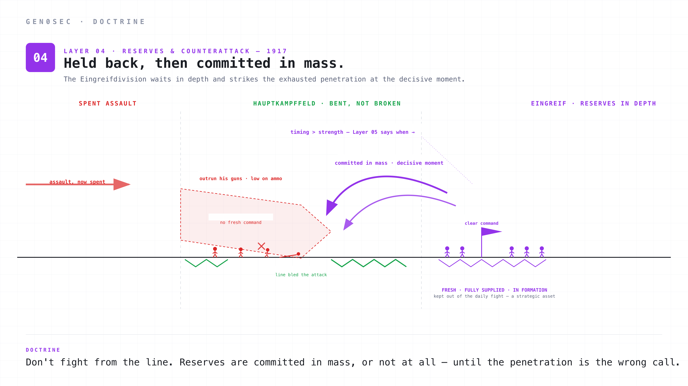
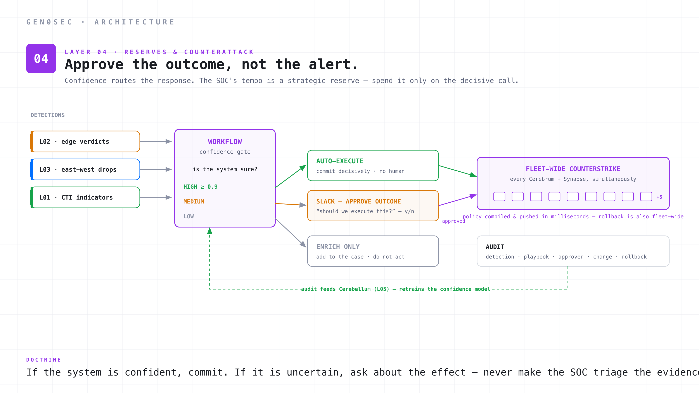
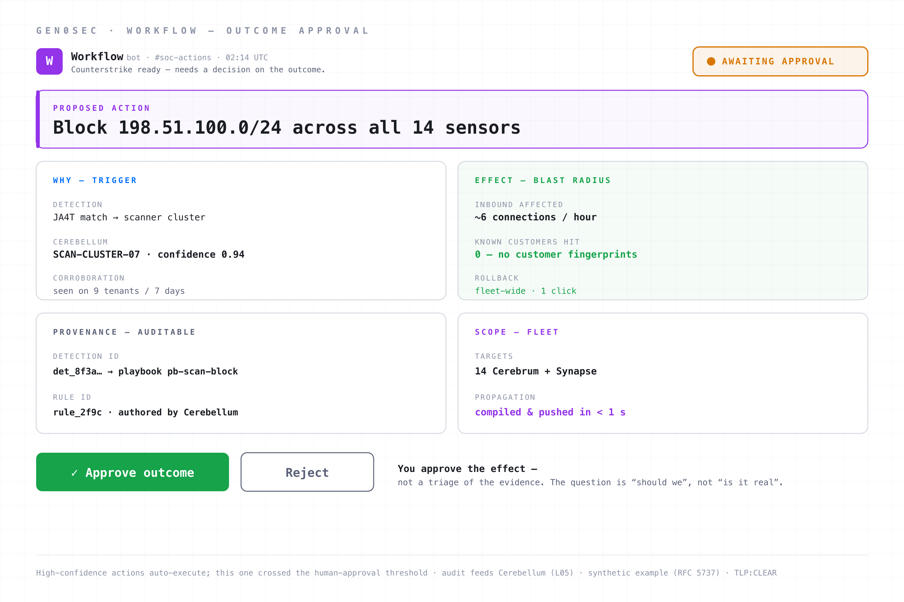

The Eingreifdivision and modern response: why the SOC has to stay fresh, and why automation that approves outcomes beats automation that fires alerts.
By 1917 the German army had built one more element of the elastic defense doctrine: the mobile reserve. They called them Eingreifdivisionen, "intervention divisions."
The Eingreifdivision did not sit in the trenches. It did not man the Hauptkampffeld. It was held back, sometimes ten or fifteen kilometres behind the front, with a clear chain of command, with its own organic transport, with explicit operational authority to move toward whichever sector of the front was about to fail. When the British or French attack penetrated the main defensive zone and committed their assault troops, the Eingreifdivision drove forward and counterattacked. The attacker, exhausted by the penetration, low on ammunition, low on organic command, low on artillery preparation now that he had outrun his own guns, was struck on the flank or front by a fresh, fully-supplied, fully-organised division.
This was the doctrinal hinge. The static defenders of the Hauptkampffeld fought to bleed the attack. The Eingreifdivision fought to defeat it. The defenders made the penetration costly. The reserves made the penetration the wrong call.
Cambrai is the cleanest example of the reserve doing its job. When the British tank attack tore into the German lines on 20 November 1917, the divisions that recovered the ground were not the ones that had absorbed the blow. They were the Eingreif divisions held in the rear, untouched by the first three days of fighting. On 30 November they counterattacked the flanks of the British salient — fresh troops against an attacker who had outrun his artillery, his supply, and his command — and took back most of the lost ground in a matter of days. The reserves had not been spent holding the line. That is exactly why they were still able to win.
The German staff understood three things about reserves that most modern security teams forget.
The first is that reserves are useless if they are tired. An Eingreifdivision that had spent the previous month rotating through the trenches as line infantry would arrive at the counterattack low on cohesion, low on equipment, and with leadership exhausted by sustained combat. The doctrine required that reserves be kept out of the daily fight. They were a strategic asset, not a tactical one. A unit commander who used his reserves to plug minor gaps was depleting his counterstrike capability for marginal gain.
The second is that counterattack timing is more important than counterattack strength. A perfectly-organised reserve that arrived three hours late was less useful than a smaller force that arrived at the right moment. The doctrine put a heavy premium on operational intelligence (which is Layer 05) feeding the reserve commander information about when to commit. The decision was not "should we counterattack" but "is this the moment".
The third is that the counterattack had to be decisive when it happened. Half-measures gave the attacker a chance to consolidate, dig in, and turn the penetration into a permanent salient. The doctrine called for full commitment when the counterstrike fired. No reinforcement-by-trickle. No "let's see how it goes." Reserves were committed in mass, or they were not committed.
All three of these translate cleanly into modern incident response.

In a modern network architecture Layer 04 is the layer that turns telemetry into action. SOC, SOAR, IR, automated response, hot-loaded blocklists, fleet-wide policy updates. The doctrinal name is "counterstrike from reserves". The technical name is whatever your stack calls it. The function is the same.
The components are familiar. A security operations centre, staffed by humans, monitoring alerts from Layers 02 and 03. A SOAR or workflow engine for codifying response playbooks. An incident response process that lets analysts dispatch a containment action across the estate. Integration with the rest of the stack: the firewall, the IDS, the EDR, the identity provider, the cloud control plane. Sometimes a separate threat hunting team. Sometimes a tabletop drill cadence.
The mistake almost everyone makes is to treat this layer as the only enforcement layer. Every alert goes to the SOC, every action requires SOC approval, every incident is shaped like "the SOC will investigate and decide". This is the equivalent of fighting every engagement with reserves. The reserves arrive everywhere, exhausted, and there is no decisive counterattack left when one is needed. The modern SOC does not run out of people because the attacks are too clever. It runs out of people because the easy traffic was never killed at the line, and the reserves are spending their day on patrol work that Layers 02 and 03 should have finished.
A useful Layer 04 has four properties.
The line is doing the line's work, not the reserves'. Edge controls block what edge controls can block. Deep inspection blocks what deep inspection can block. Microsegmentation contains what microsegmentation can contain. The SOC sees what survived all of that. If your SOC is triaging port-scan noise from Layer 02, your Layer 02 is broken, not your SOC. The reserves are for the counterstrike, not for the patrol.
Automation is opinionated about confidence. High-confidence detections at Layer 03 (or high-confidence indicators from Layer 01) should auto-execute the response. Low-confidence detections should escalate to the SOC. The decision rule is doctrinal: if the system is confident, commit decisively, like an Eingreifdivision. If the system is uncertain, do not waste the SOC's tempo on a half-measure. Confidence thresholds belong in code, not in tribal knowledge.
SOC approvals are about outcomes, not alerts. This is the single most underweighted design decision in modern security tooling. When a high-risk action needs human approval, the right question to ask the analyst is not "is this alert real" but "should we execute this response". The first is a question about evidence. The second is a question about effect. Asking the second question is faster, less ambiguous, and produces decisions the system can act on. Asking the first question creates the alert backlog every SOC team complains about.
Counterstrike is fleet-wide. When the decision is made to block a /24, the block applies across every Cerebrum sensor and every Synapse agent simultaneously. Not in the queue. Not in the next push. Now. The unit of enforcement is the fleet, not the host. This is the modern equivalent of the Eingreifdivision committing in mass: a partial, single-host containment lets the attacker pivot. A simultaneous, estate-wide containment denies the pivot.

There are two doctrinal points to add.
The first is about audit. Every action that Layer 04 fires must be audit-logged with its provenance. Which detection triggered it. Which playbook ran. Which analyst approved. What the action was. What changed. What rolled back. This is not a compliance requirement, although it is one. It is a doctrine requirement, because the lessons learned by Layer 04 feed Layer 05. If you cannot reconstruct what your reserves did, you cannot improve their performance.
The second is about wiring. Layer 04 has to integrate with whatever your SOC is already using. SOAR platforms, ticketing systems, SIEM, on-call paging, change management. The Workflow tool that "owns" the layer is not a sufficient interface to the SOC; it has to fit into the SOC's existing rhythm and produce the artifacts that the SOC's downstream processes expect. A counterstrike that requires three new dashboards before it can fire is a counterstrike that arrives late.
Workflow is the SOC + automated response product. It is purpose-built for this layer of the doctrine.
It is AI-powered. Workflow is built around playbooks that have a reasoning loop. Given a detection, given the context Cerebellum provides, given the historical pattern of similar detections across the fleet, what is the recommended action and what confidence do we have in it. The decisions are not just rule-based. The recommendation engine learns from the actions that humans approve, the actions humans reject, and the outcomes both produce.
It is standalone or integrated. Workflow runs as a standalone product against the Gen0Sec stack: Cerebrum, Synapse, and Cerebellum. It also runs as a layer on top of whatever SOAR and SIEM you already have. We see the integration both ways. Customers who are deep in Splunk + Phantom can let Workflow drive enforcement decisions while their existing SOAR handles ticketing and case management. Customers without an incumbent SOAR can use Workflow end-to-end.
Outcomes go to Slack, not alerts. When Workflow needs a human, it asks the human about the outcome. "We are about to block 198.51.100.0/24 across all 14 sensors based on a JA4T match against a known scanner cluster. The block will affect approximately 6 inbound connections per hour and zero of them are from known customer fingerprints. Approve?" The analyst sees the effect, not the alert. The decision is a yes-or-no on the action, not a triage of the underlying evidence.
Auto-push to Cerebrum and Synapse is built in. When Workflow decides on a block, the policy propagates to every Cerebrum sensor and every Synapse agent in milliseconds. There is no "deploy" step. There is no "stage to canary, then push." The fleet is the unit of enforcement. If something needs to roll back, the rollback is also fleet-wide. The rate at which we can take action is the rate at which Synapse can compile a new policy, which is sub-second.
Audit by default. Every action Workflow fires is logged with the detection that triggered it, the Cerebellum confidence score, the approver (human or automated), the policy change, the affected hosts. The audit trail is queryable. It is also fed back into Cerebellum, which uses it to refine future confidence scores. The reserves learn from their own counterattacks.
SOC fatigue is the design constraint. Every decision Workflow makes is implicitly weighed against the alternative of paging an analyst. The threshold for paging is high on purpose. The system would rather take a low-risk automated action than burn a tier-1 cycle. The on-call queue is a strategic resource. If we are spending it on noise, we cannot spend it on the real incident.
Most security tooling pages a human with an alert. An alert is a question about evidence: here is a thing that fired, is it real, go and find out. The analyst opens five tabs, pivots through a SIEM, checks the IP against three feeds, decides it is probably bad, and then — separately, often in a different tool, often after a change-management step — actions a response. The investigation and the decision are two different jobs, and the alert only hands you the first one. The backlog every SOC complains about is a backlog of half-finished first jobs.
Workflow does not page an alert. It pages a decision: the action it intends to take, the effect that action will have, and a yes/no. Here is one.

Read it the way the on-call analyst does, because every panel is there to answer "should we", not "is it real".
The ask is an action, already formed. Block 198.51.100.0/24 across all fourteen sensors. Not "investigate this IP." The investigation is already done — the system did it — and what is left is the one thing a human is genuinely better at: deciding whether the effect is acceptable. The analyst is not being asked to do the work. They are being asked to authorise it.
The trigger and confidence are why the system wants to act. A JA4T match against SCAN-CLUSTER-07, a behavioural cluster Cerebellum scored at 0.94 and corroborated across nine tenants in the last week. This is the evidence — present, but compressed into a verdict, not handed over as a pile of logs to re-derive. The analyst can drill in if they want. Most of the time they do not need to, because the next panel tells them what actually matters.
The blast radius is the decision. The block affects roughly six inbound connections an hour, and zero of them match a known customer fingerprint. Rollback is one click, fleet-wide. This is the panel that turns a hard question into an easy one. "Is this IP malicious" is a research project. "Will blocking it hurt a customer" is a number, and the number is zero. The analyst can say yes in seconds, with confidence, because the effect is quantified before they are asked.
The provenance makes it auditable before it fires. The detection id, the playbook, the Cerebellum-authored rule id — all attached, all queryable later. When someone asks in three weeks why that /24 was blocked, the answer is one lookup, not an archaeology project. This is the audit requirement met at the moment of decision, not reconstructed afterward.
The scope is the whole fleet, at once. Fourteen sensors, policy compiled and pushed in under a second, committed everywhere simultaneously. This is the Eingreifdivision committing in mass: not a single-host block the attacker can pivot around, but an estate-wide containment that denies the pivot. And because the same prompt records the approver and the change, the rollback is as fleet-wide and as fast as the block was.
That is the difference between an alert and a counterstrike. An alert asks a tired analyst to start an investigation. A counterstrike hands a fresh one a decision, with the effect already measured, the evidence already weighed, and the whole fleet ready to move the instant they say yes. The high-confidence actions never reach a human at all; this one did only because it sat in the band where a person should still hold the trigger.
Don't fight from the line. Counterstrike from depth, with decisive force. That is the doctrine. Workflow is the technology that turns the doctrine into an operating cadence.
This is part 4 of a 5-part series on elastic network defense. Layer 05 covers intelligence and adaptation: ML pattern recognition, the Generalstab analogy, and why the only doctrine that survives an adaptive adversary is one that learns.
TLP:CLEAR — approved for public distribution.